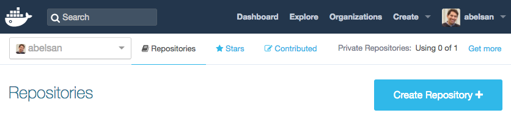

Login to docker hub and create a repository for your image (hub.docker.com). Once we are done creating the image, you will push into this repository. For this example, I created a repository called "abelsan/cabinfever"

Create an application and a docker file for the application. Then, create a docker image for the application. Name your image YourDockerUsername/YourImageName. In this example the username is "abelsan" and the image name is "cabinfever"
# create docker image $ docker build -t abelsan/cabinfever .
Test your new image.
# "-p 8080:3000" sets the container port to 3000 and the host port to 8080 # "--name cabinfeverInstance" sets the container name to cabinfeverInstance # "-t cabinfever" references the cabinfever image $ docker run -p 8080:3000 --name cabinfeverInstance -t abelsan/cabinfever
After you confirm your application works, push your image to docker hub
# note the username/image matches the docker repository $ docker push abelsan/cabinfever
To use the image, enter the pull command
$ docker pull abelsan/cabinfever